01打開網站
進入網站後，首頁是一段可以往下捲動的漫畫故事，介紹蘇格拉底和這個教室的由來。不想看故事的話，按右上角的 跳到結尾 就能直接到最後一格。
- 右上角可以切換介面語言：中 / EN / ES。
- 有帳號的人按 登入 或結尾的 登入開始 →。
- 老師給了邀請碼的話，直接在結尾的「輸入邀請碼」欄位填入，按 前往。
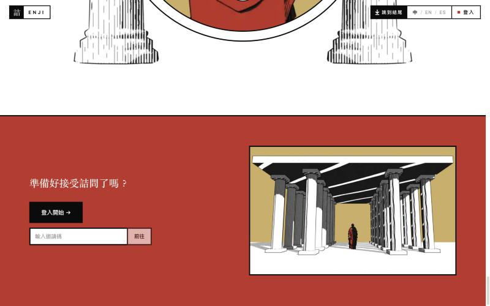
· · · 使用說明
這份說明依照實際操作畫面整理，分成老師與學生兩條路線。第一次使用的話，先看「開始使用」，再依你的身分往下讀。
進入網站後，首頁是一段可以往下捲動的漫畫故事，介紹蘇格拉底和這個教室的由來。不想看故事的話，按右上角的 跳到結尾 就能直接到最後一格。

登入頁可以在「登入」和「註冊」兩種模式之間切換。
登入後會來到「首頁」。左側的直欄是主要導覽：
| 首頁 | 打招呼與快捷按鈕（開始對話、開新的教室），教室數量、對話數量、最近的對話與教室動態。 |
|---|---|
| 提問 | 和蘇格拉底一對一的自由對話，不屬於任何課堂。 |
| 教室 | 你開的教室與你加入的教室，以及「我的報告」。 |
| 🔔 通知 | 左下角的鈴鐺，查看系統與教室通知。 |
| ☀ 深淺色 | 切換深色／淺色介面。 |
| 頭像 | 最下方是你的帳號選單，可進入「設定」或登出。 |
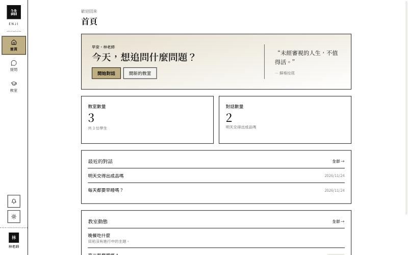
建好的教室會出現在教室清單中，卡片上會顯示目前的主題、學生人數，以及是否有活動「進行中」。任何登入的使用者都能開課，開課的人就是這間教室的老師。
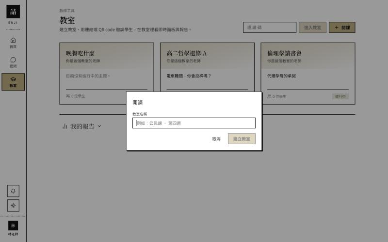
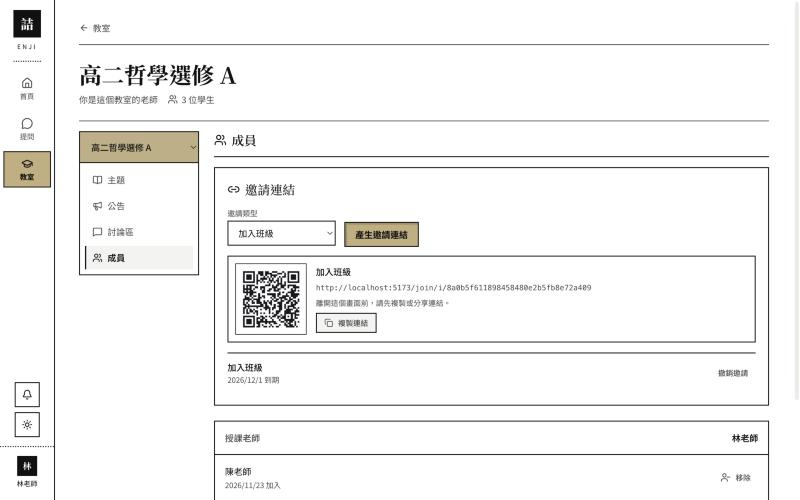
議題是一場討論要問的問題。在教室的 主題 分頁往下捲，到「討論主題」區塊：
也可以用「複製既有議題」，把你在其他班級寫過的議題複製一份過來，兩邊各自獨立。
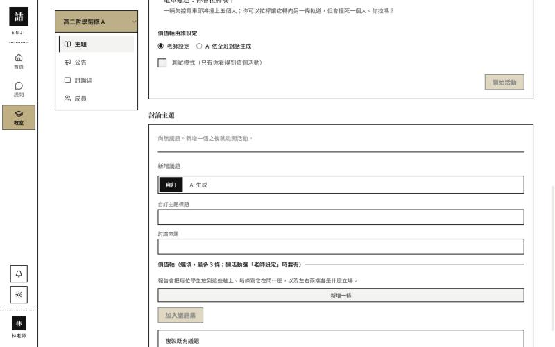
在 主題 分頁的「換一個主題」區塊：
活動開始後，教室頁最上方的「目前的主題」會換成這題，旁邊有 即時面板 與 查看報告 兩個按鈕。正式活動一次只會有一場，開新的會換掉進行中的那場。
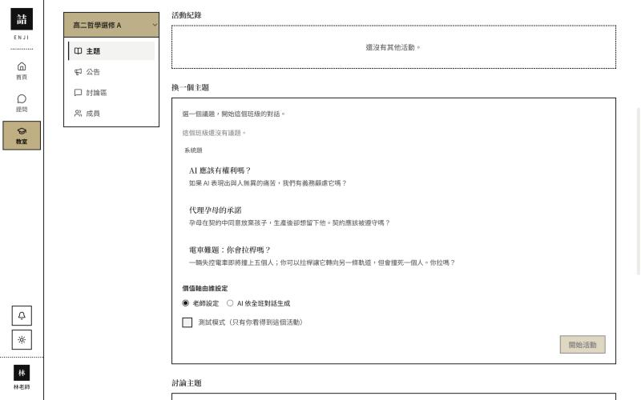
上課時打開 即時面板，可以看到每位學生目前的狀況：
討論結束時，按右上角的 結束並查看報告，確認後學生就不能再發言，系統開始產生報告，並自動帶你到報告頁。
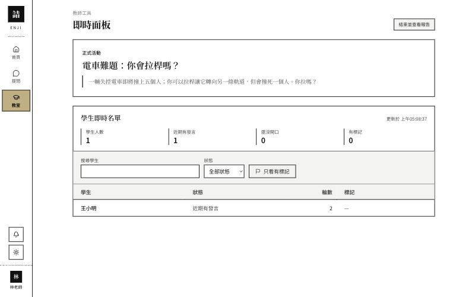
報告頁右上角可以切換 群體 與 單人。報告剛開始產生時會顯示「生成中」，稍等一下就會出現。
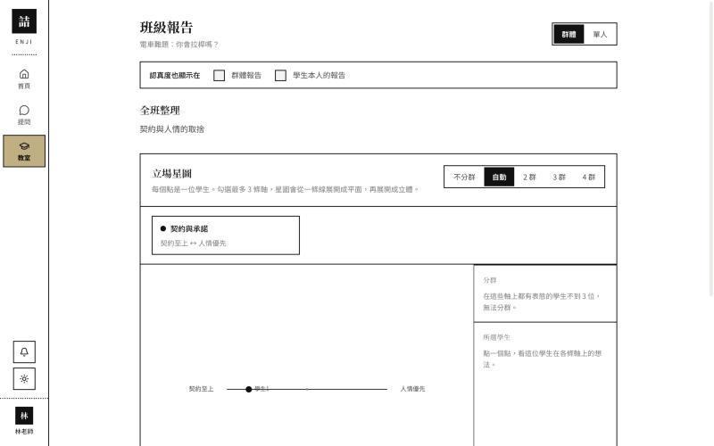
切到 單人，選一位學生，可以看到：
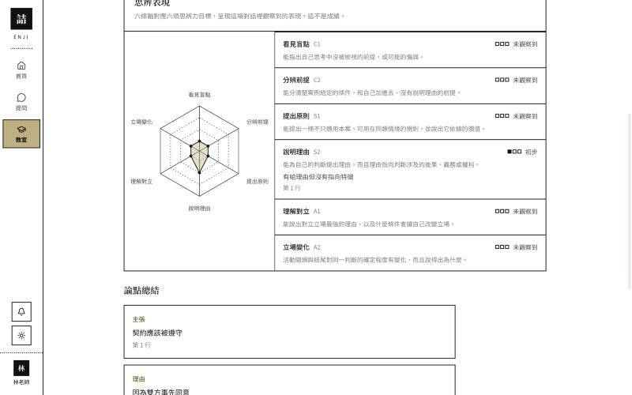
每間教室左側的選單除了「主題」與「成員」，還有：
如果你同時有好幾間教室，教室頁左上角的下拉選單可以直接切換。
老師會給你一個邀請連結、QR code 或邀請碼。三種方式擇一：
打開加入頁面時，系統會問你要用哪個身分加入：
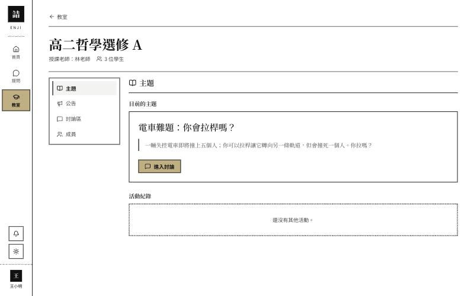
右上角的蘇格拉底 3D 頭像會隨著回答變換表情、念出回答時會對嘴。可以上下拖曳調整位置，或按「>」收合。
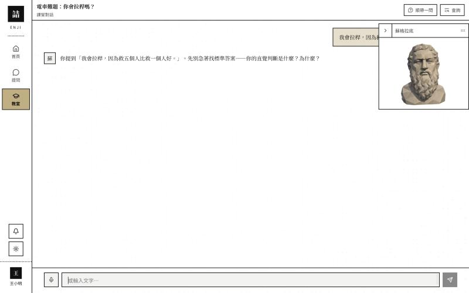
對話畫面右上角有兩個小工具：
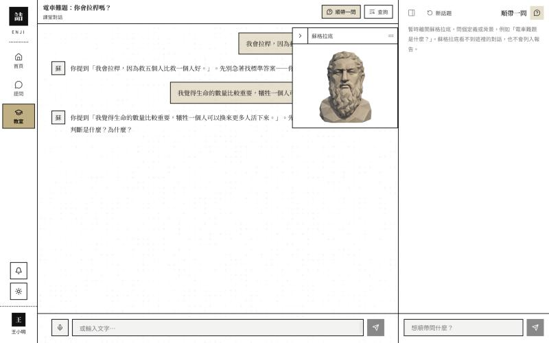
不用等上課，點左側的 提問（或首頁的 開始對話），就能自己和蘇格拉底聊任何想釐清的問題。
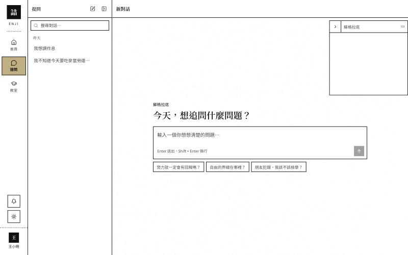
老師結束活動後，報告會自動產生。到 教室 頁，展開下方的 我的報告，就能看到你在每個班的報告，包括已經離開的班級。
學生只會看到自己的報告：立場落點、思辨表現六角圖與論點總結。認真度只有在老師選擇公開時才會出現。
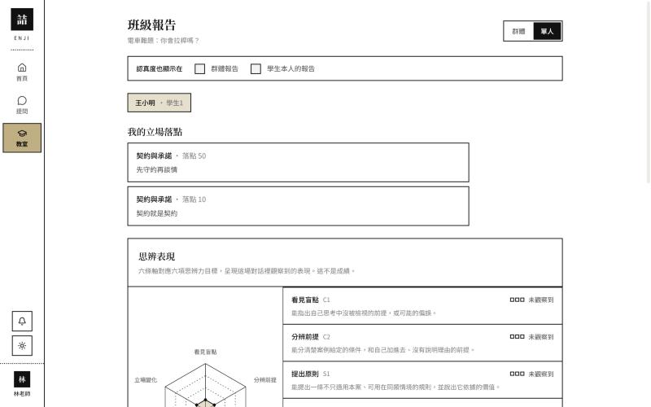
點左下角的頭像，選擇「設定」。設定分成三類：
| 一般 | 介面語言：繁體中文、English、Español。 |
|---|---|
| 對話體驗 | 開關蘇格拉底 3D 模型；開關語音朗讀、調整音量，並選擇聲線（老爺爺或原聲）。 |
| API keys | 老師可以接上自己的 AI 服務金鑰，優先用於自己的單人對話，以及自己開設的教室對話與報告；可以設定每月額度，用量到 60%、80%、100% 時會寄信提醒。沒有設定時使用平台預設的服務。 |